Job 1–3; 12–14; 19; 21–24; 38–40; 42 · August 16, 2026
Last week a whole nation got rescued and nobody saw it coming. This week a good man loses everything and never finds out why. Both stories are in the same book. That is the point.
Job asks why for thirty five chapters. God never tells him.
Warm-up: Two questions about Esther. Tap the one you think is right.
Old Testament Stories, Chapter 46: Job. The Church's animated Primary version, if you would rather show it than tell it. This copy is a reupload, so if it ever goes dead the official one lives on the Church site.
Job is the best man alive. The book says so in the first sentence. He is rich, he has ten kids, and he prays for his children just in case they messed up when he was not watching. Nobody is doing better than Job.
Then four messengers show up. Watch how they arrive.
Four times the scripture says the same six words: while he was yet speaking, there came also another. Nobody even finishes a sentence. Job does not get a single minute between them.
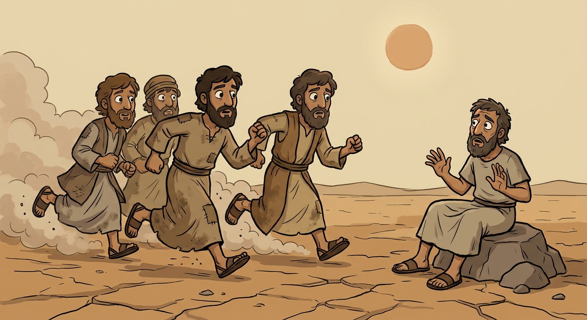
"The Lord gave, and the Lord hath taken away; blessed be the name of the Lord."
Four of these arrive the same morning, one on top of another. The last three come after.
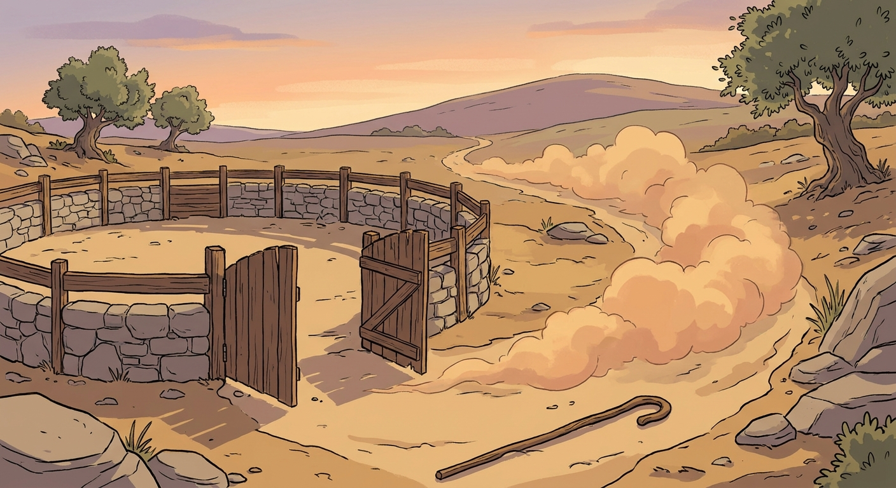
The Sabeans took the oxen and the donkeys, and the farmhands with them. Five hundred yoke of oxen, gone before the sun was properly up.
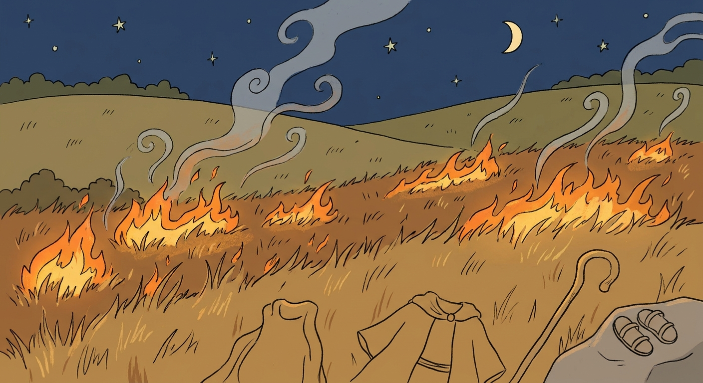
Fire fell and burned up the sheep and the shepherds. Seven thousand sheep. The messenger got there while the first one was still talking.
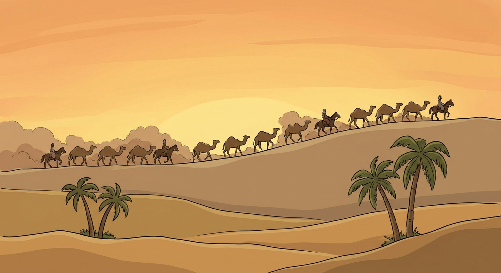
Raiders in three bands drove off the camels and took the servants too. Three thousand camels, which was most of what made him rich.
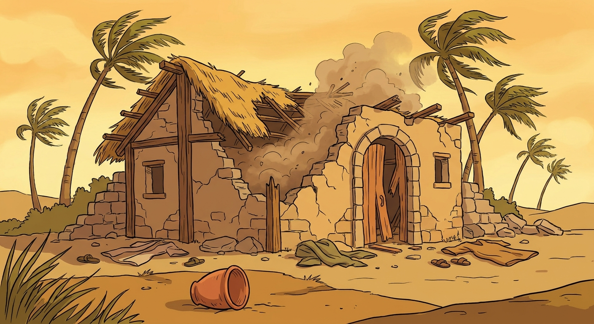
A great wind came out of the wilderness and the house fell in on his children while they were eating together. All ten of them. This is the one that is not about money.
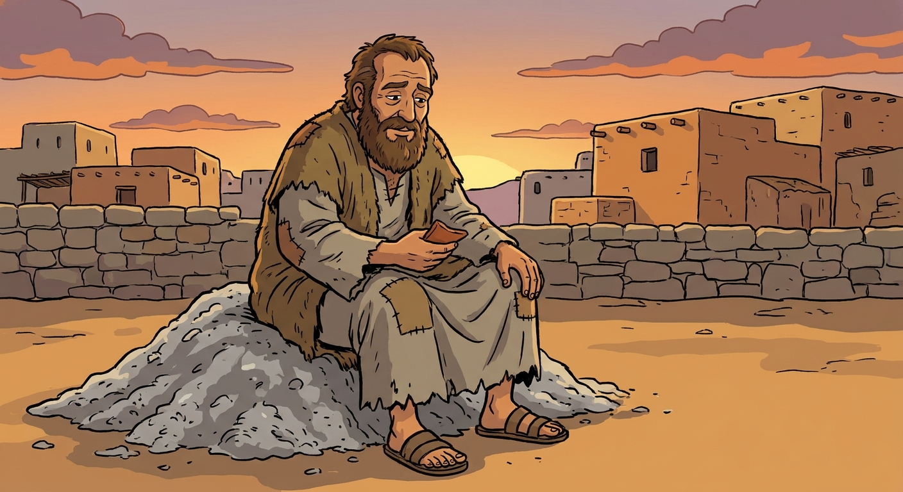
Then he got sore boils from the soles of his feet to the top of his head. He sat down in the ashes and scraped himself with a piece of broken pot.
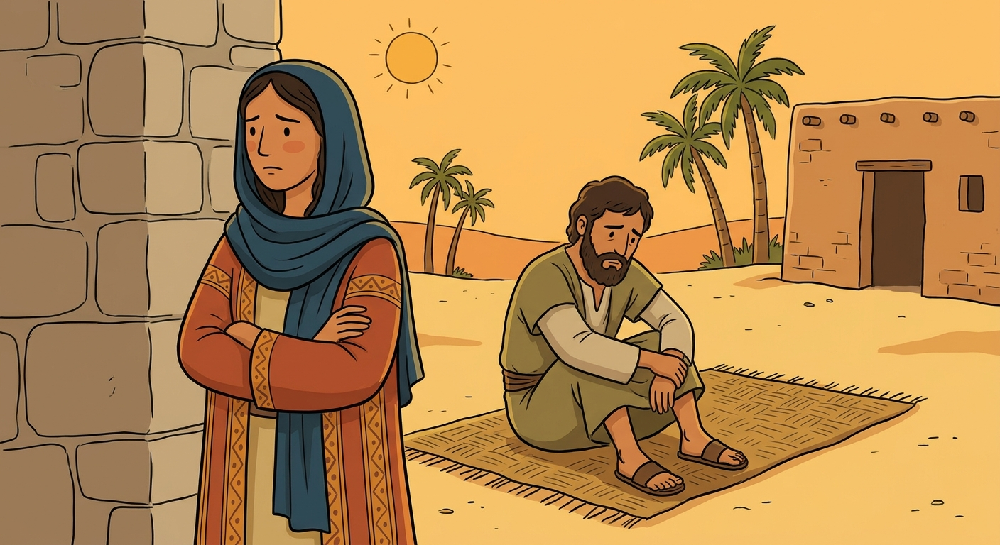
His wife told him to give up. She had lost the same ten children he had. Grief does not make everybody kind.
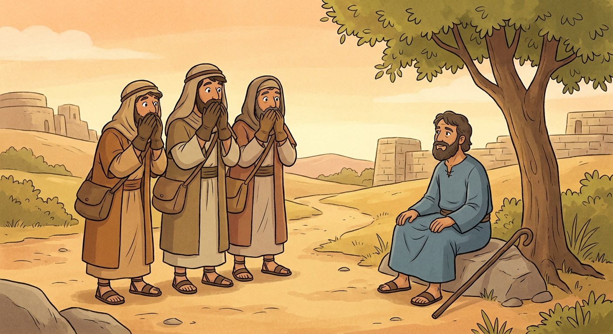
His three friends came, and when they saw him from far off they did not know who he was. They would sit with him beautifully, and then spend twenty five chapters blaming him for it.
Ask them straight out: if that happened to you before breakfast, what would come out of your mouth? Let them answer honestly. Most of us would not say what Job said.
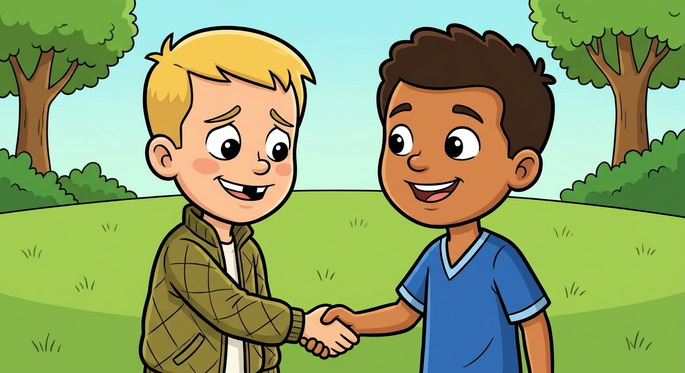
Three friends hear what happened and travel a long way to find him. When they see him they do not recognize him. Then they do something remarkable.
"So they sat down with him upon the ground seven days and seven nights, and none spake a word unto him: for they saw that his grief was very great."
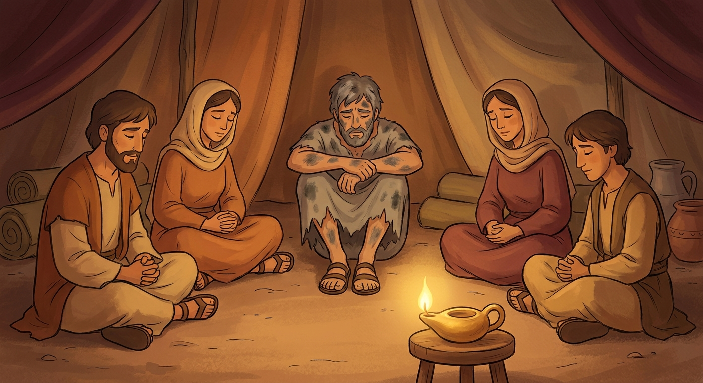
The silent minute. Everybody sit still and say nothing for sixty seconds. No phones, no whispering. Watch the clock together.
Then tell them: Job's friends did that for ten thousand and eighty minutes. Seven days and seven nights, sitting on the ground next to him, saying nothing at all. It is the best thing anybody does for Job in the entire book.
Then they open their mouths, and they spend twenty five chapters explaining to Job that this is probably his own fault. Every one of them is wrong. At the end God tells them so.
Comfort or crush? Somebody in your class is having a terrible week. Tap what you would say.
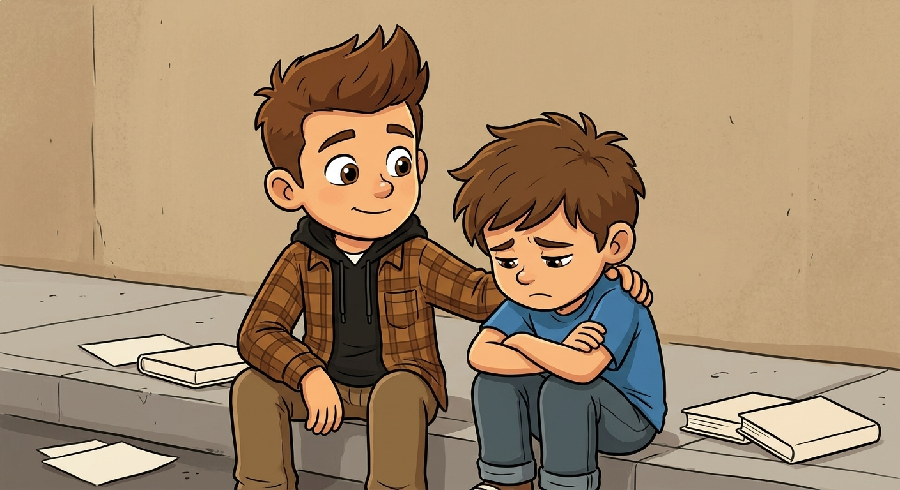
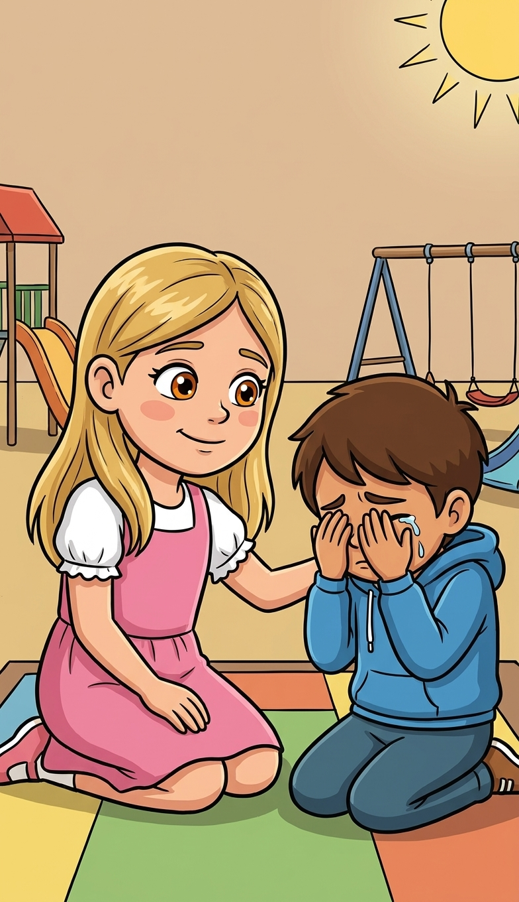
Job has been asking one question the whole book. Why. When God finally answers out of a whirlwind, he does not explain anything. He asks Job questions instead.
Nobody can answer any of them. That is the answer. God does not tell Job why he suffered. He shows Job who is holding the whole world together, and Job decides that is enough.
Somewhere in chapter 38 God mentions that when he built the earth, the morning stars sang together. Job was not there. Neither were we.
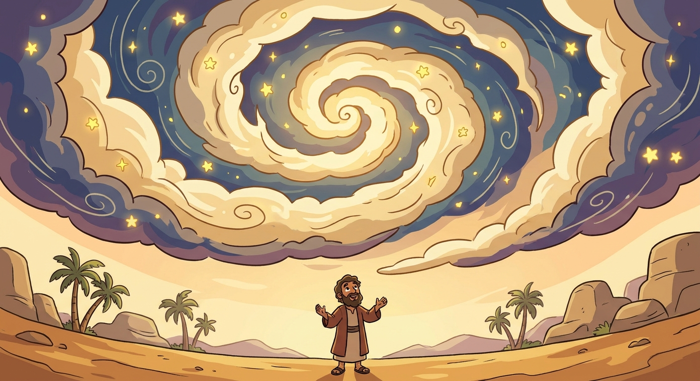
"Though he slay me, yet will I trust in him."
"I know that my redeemer liveth."
"When he hath tried me, I shall come forth as gold."
Job says all three of those while he still has no idea why any of it happened. He is not trusting God because things worked out. Things have not worked out yet.
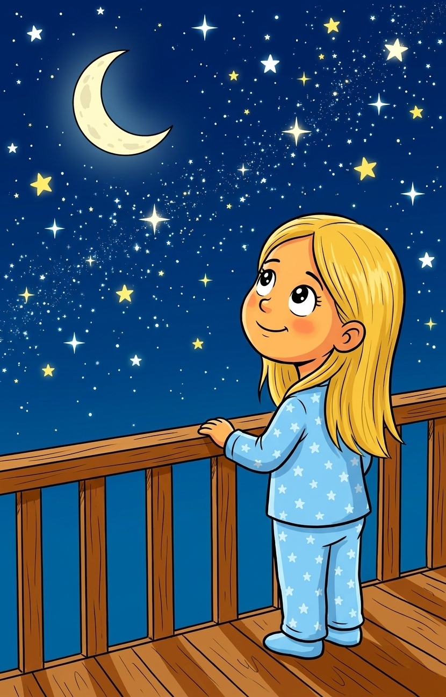
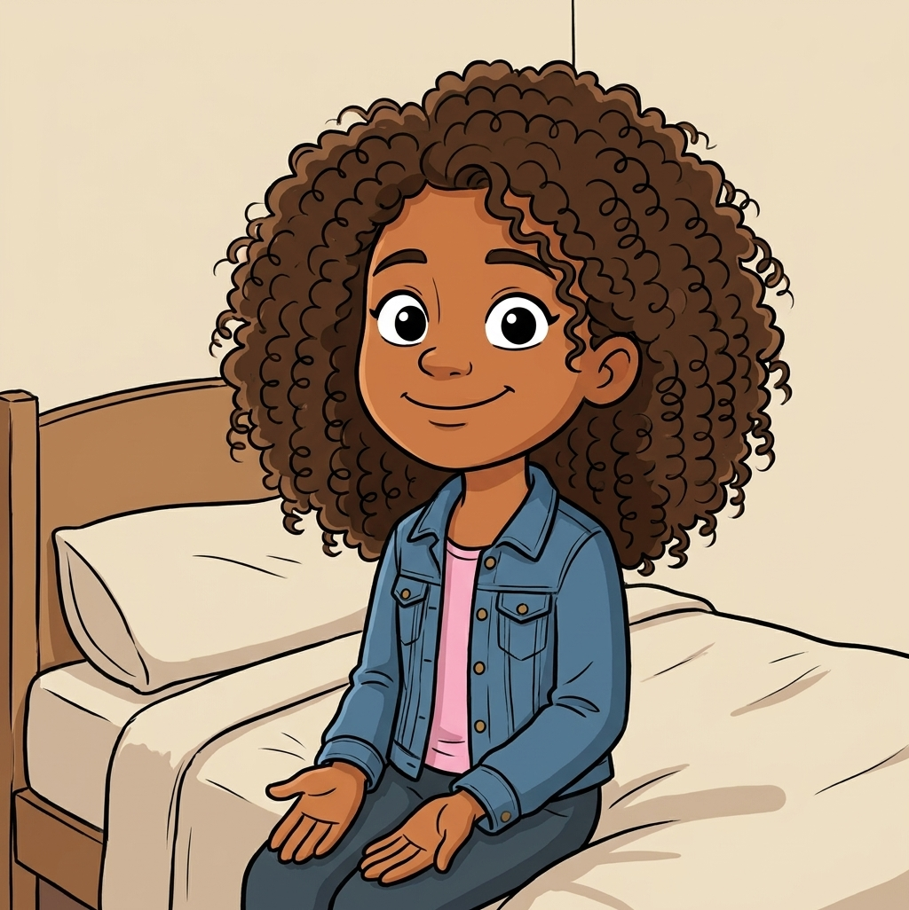
At the very end Job gets more than he started with. That is not the moral. Plenty of people never get their ending in this life, and the book knows it. What Job gets in chapter 42 is not an explanation. It is God, in person.
Who do you know that is having a hard week right now? Not to fix it. Just to sit by them, the way Job's friends did before they ruined it.
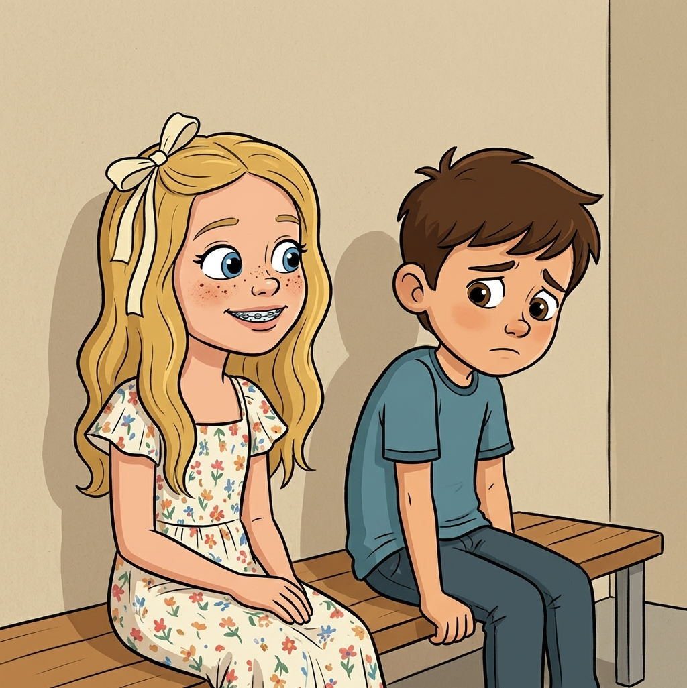
Children's Songbook 74. Fits the day better than anything triumphant would.
At the very end, after everything, the Lord gave Job twice as much as he had before. Flip two cards at a time and find the pairs. Every pair you match comes back doubled, the way Job's did. Six pairs, and the fewer flips it takes you, the better.
Find all six pairs. Watch what each one turns into.
Click or tap to begin
Tap a card to turn it over, then tap another to look for its match.
Job lost all of it in one morning. Getting it back takes a while.